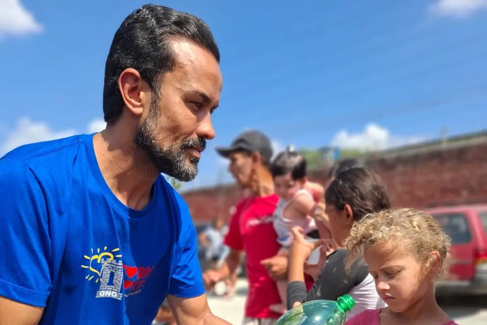

Quem somos
Uma ONG de Santo André que aquece corações
A Torre Forte é uma organização sem fins lucrativos criada por Rodolfo Donetti. Apoiamos crianças e famílias de comunidades em situação de vulnerabilidade social com alimentação, acolhimento, educação e desenvolvimento infantil.
Nosso propósito é ajudar crianças hoje para que elas possam transformar outras vidas amanhã.

Nossa história
Como tudo começou
Fundador
Rodolfo Donetti
- 1999Começa a participar de trabalhos comunitários.
- Polícia MilitarConhece de perto a realidade das crianças das comunidades.
- 2009Dá início ao projeto social Torre Forte.
- HojeCentenas de crianças e famílias acompanhadas em Santo André.
A história da ONG Torre Forte começou com o desejo de Rodolfo Donetti de transformar vidas por meio da solidariedade.
Em 1999, ele passou a participar de trabalhos comunitários. Mais tarde, ao ingressar na Polícia Militar do Estado de São Paulo, conheceu de perto as dificuldades enfrentadas por crianças de comunidades vulneráveis.
Motivado por essa realidade, deu início em 2009 ao projeto social que se tornou a Torre Forte, com o propósito de oferecer acolhimento, oportunidades e esperança para crianças e famílias.
Hoje, a ONG atende centenas de crianças, principalmente entre 3 e 15 anos, por meio do Pastel Solidário, do Jiu-jítsu Solidário, das aulas de música, das campanhas solidárias e das ações comunitárias.
O que nos guia
Missão, visão e valores
-
Missão
Transformar a vida de crianças em situação de vulnerabilidade social por meio do acolhimento, da solidariedade e de oportunidades de desenvolvimento.
-
Visão
Construir um futuro em que crianças acolhidas hoje se tornem adultos capazes de transformar positivamente a vida de outras pessoas, criando um ciclo contínuo de solidariedade.
-
Valores
- Solidariedade
- Acolhimento
- Respeito
- Empatia
- Compromisso social
- Esperança
- Transformação
Onde atuamos
Comunidades de Santo André, no ABC Paulista
A Torre Forte atua em comunidades de Santo André, na região do ABC Paulista, perto das crianças e famílias que acompanha.
Veja os projetos
Transparência
Dados oficiais
Informações da organização para quem quer apoiar com segurança.
- Razão social
- ONG Torre Forte
- CNPJ
- 18.064.145/0001-11
- Fundador
- Rodolfo Donetti
- Atuação
- Santo André (SP), ABC Paulista
- Chave Pix
- CNPJ 18.064.145/0001-11, em nome da ONG Torre Forte
Faça parte dessa história
Cada doação e cada hora de voluntariado ajudam a Torre Forte a cuidar de mais crianças no ABC.
Aquecendo corações